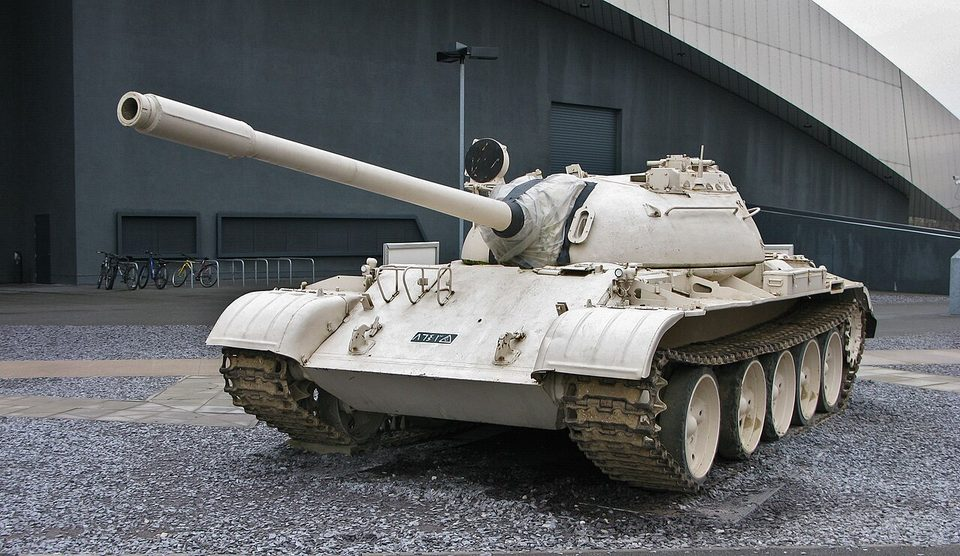
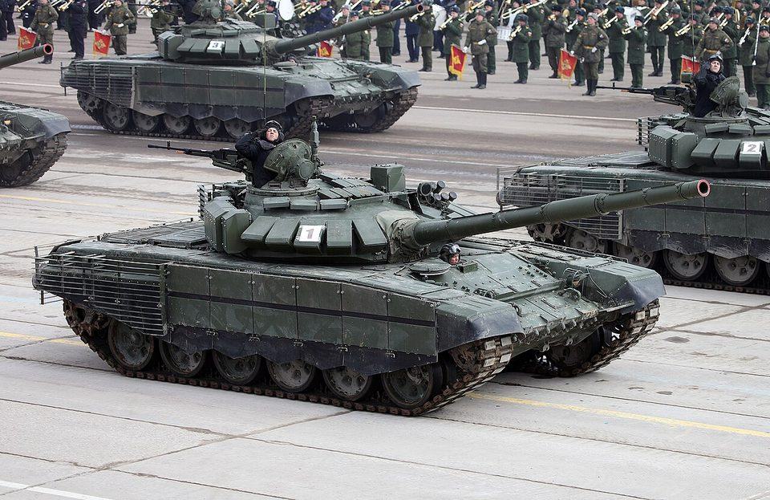
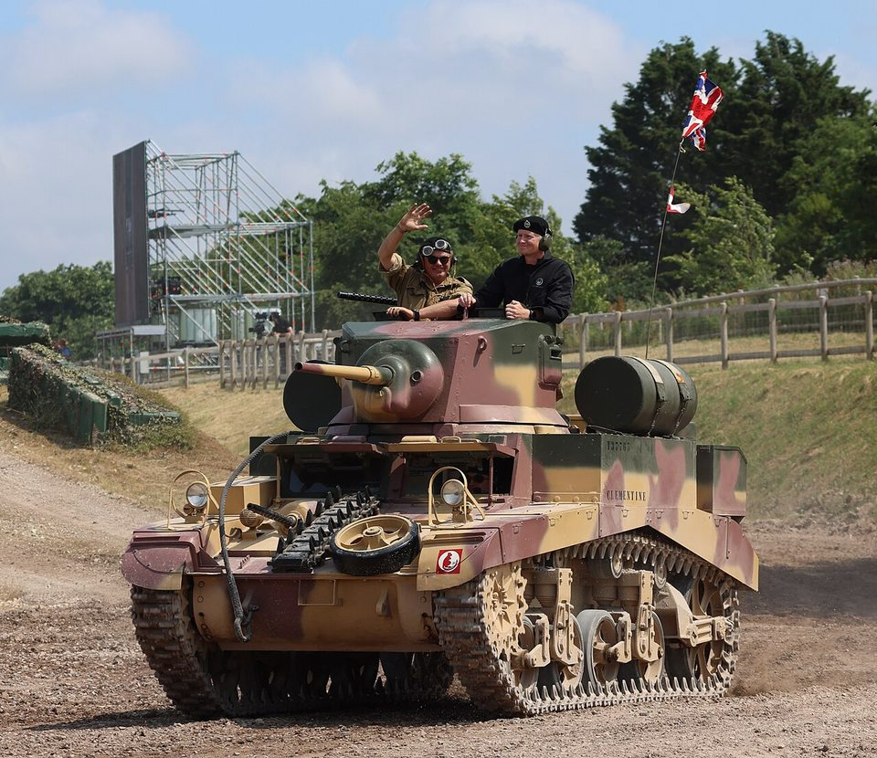
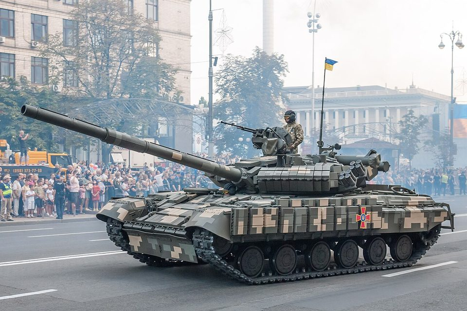
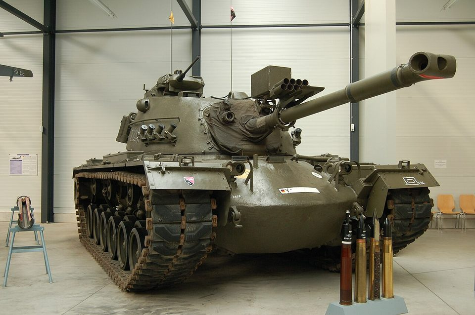

Todos los tanques › Artículos › Los 10 tanques más fabricados de la historia
Lista
Los 10 tanques más fabricados de la historia
Los carros de combate fabricados en mayor número, del T-54/T-55 al M48 Patton, con las cifras de producción de cada uno.
Cifras de producción según las fichas de esta enciclopedia. En los carros más antiguos y en los soviéticos, las cifras son estimaciones y varían según las fuentes.

1 · Unión SoviéticaT-54 / T-55
Entre 96.500 y más de 100.000
Fabricado en la Unión Soviética, Polonia, Checoslovaquia y China durante casi cuarenta años.



4 · Unión SoviéticaT-72
Unos 25.000
También fabricado bajo licencia en Polonia, Checoslovaquia, India y Yugoslavia.




